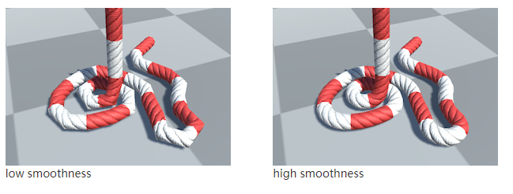

绳子插件Obi Rope介绍
本文写于生还者2的时间段（笑）
介绍
生还者2虽然被狂喷，但其中还是有不少有意思的东西。

可以看到，图中的绳子可以做到和游戏中的环境进行实时交互，拉伸，紧绷等属性都能很好的展现，而人物也有对应的各种状态下的动作，实在是细节无敌，可能顽皮狗加班一直都在做这个和西服吧（笑）。
那如何在Unity中实现这样的绳子呢？Obi Rope这款插件或许能做到：在unity商店搜索“Obi”，就可以找到“Obi Rope ”这款模拟绳子的插件。这款插件是由西班牙工作室“Virtual Method ”开发，他们于2002年成立，为许多欧美游戏大厂提供过技术支持。”Obi”系列则是这家工作室为Unity制作的，可实时模拟绳索，流体，布料和软体的插件。
从商店直接下载Obi rope导入工程，可以看到官方在RopeAndRod文件夹下提供了10个案例学习，其中Crane(起重机)和Plectoneme（交缠螺旋）则是对应绳子的拉伸和旋转的使用场景，确实有点内味儿了。

接下来我们可以看一看RopeAndJoint场景，这个案例比较详细的展示了Obi rope的用法。
首先自然是绳子，选中绳子，可以看到两条绳子都挂载到了名为Obi solver的物体下，Obi solver身上带有两个脚本Obi Solver和Obi Fixed Updater:
从官方文档中得知，Obi solver负责模拟粒子的物理属性并执行约束，这句话有些抽象，但我们只要知道怎么用就好了，其中有三点很重要：
Obi solver可以添加到任意GameObject中，同一场景允许运行多个。- 绳子必须是
Obi solver子级才能实时更新运动和仿真。 - 每个solver独立与其他solver ，所以不同的solver 下的子物体不会互相影响，只有同一solver下的绳子才会相互反应。
涉及Obi solver 的相关设置很多，这里不过多赘述，新建solver时选择默认的就好。
接下来看Obi Fixed Updater，顾名思义，这个组件会让solver下的子物体在FixedUpadte()期间更新。同样，你需要手动选择你希望运行的Obi solver添加到Updater中，不过obi很贴心,当你新建Obi solver时会自动添加到Updater的Solvers里。
接着介绍Solvers 下面的两个参数:
- Substep Unity physics，勾选上之后，该solver下的绳子能够与场景中的物体进行更精准的交互，一般默认勾选。
- Substeps控制绳子的模拟精度，Unity中默认的timestep为0.02,假如在这儿设置Substep=4，那每次运行程序将会计算出0.02/
4=0.005s的绳子的运动轨迹。总结下来就是，Substep值越大，模拟精度越高，程序性能越低。
接下来看绳子，也就是Obi Solver下的Obi Rope。每条绳子分别挂载了Obi Rope,Obi RopeExtruded Renderer,Obi Path Smoother以及多个Obi Particle Attachment组件。

先来看看Obi Rope组件 ，Obi Rope 中比较重要的功能就是绳子编辑器Blueprint，Obi 提供了一些不同种类的绳子资源，这里我们选择Joint rope1就好，之后点击Edit path ，你就可以在场景中对绳子进行编辑。
你也可以按住shift，同时选择多个节点进行操作，Path Editor的其他参数解释中，tangent mode 三种模式同样很好理解，如下图：
Thickness控制绳索在该点的粗细，mass控制粒子的质量，phase是个很重要的属性，可以后面结合Obi Collider一起说。
第二个组件是Obi path Smoother ，这个组件决定绳子的渲染:
第一个参数Decimation ，官方文档用了一张图进行解释，你可以在Unity场景中选择Wireframe模式进行观察，会发现Decimation 值越大，绳子的面片越少，性能自然也会得到提升:
第二个参数Smoothing，值越大绳子越滑:

第三个参数Twist,决定每个绳索链结部分的扭曲度数，如下图:
第三个组件是 Obi RopeExtruded Renderer，Obi一共提供了四种渲染器，该渲染器是创建新的Obi Rope 时默认的。此处也不展开说（好麻烦哈哈），有兴趣的可以查阅文档自己探索。（文档地址文末）

最后一个组件是Obi Particle Attachment，这个组件用于将绳子的一端粘合到另外一个对象上。
使用方法也很简单，选择绳子的的一个粒子组，并给这个粒子组指定对应的粘合物体，绳子的这个粒子组所在的位置就会粘合在这个物体上并跟随运动：
Particle Attachment有两种类型 :Dynamic和static，此场景中的该组件都选择的是Dynamic，官方文档中也对这两种模式进行了详细说明：
先来看static模式，官方的解释是static type 下，组件会完全取消激活被选中的粒子的动力学。实际上就是粒子的运动的惯性对其绑定的物体不会有任何影响，此时该粒子的运动完全由绑定物体决定。
再来看Dynamic模式就好理解了，选择Dynamic后组件会和粒子的运动惯性互相影响，选择了Dynamic 后会多出两个参数，Compliance决定连接点的牢固性，Compliance =0，连接点会非常牢固，Compliance值越大，连接点越灵活；Break threshold=连接点可以不被扯断的最大的力。
最后让我们看下两种模式下的GIF图，来体会其中的不同：
需要注意的是：Target的物体需要带有Obi collider组件。
在案例中，绳子和场景中的地板墙壁都添加了 Obi Collider和 Obi Rigidbody， Obi Collider的作用就是让绳子能与其他元素发生碰撞。除了Polygon Collider2D， Obi支持几乎所有的Unity碰撞器。
如果你希望能忽略一些特定的碰撞体，就可以用到Phase(碰撞阶段)，每个obi Collider都具有phase属性，而Obi Rope也同样具有phase 通道，当Obi collider的 phase 和Obi rope的值相同时，他们将彼此忽略。
默认情况下，Obi Collider 的phase=0，Obi rope的phase = 1：
需要注意的是，在不同Obi solver 下创建的Obi 物体，就算phase值相同也不会产生交互效果。
Obi Rigidbody仅包含一个参数，选中”Kinematic For Paticle”后，物体不会被绳子影响，但绳子还是能感受到物体的存在（老二刺螈了）。
文章的最后，用Unity娘致敬下生还者2：

参考
Obi 官方文档: Obi Physics for Unity
Obi 工作室博客: Obi.virtualmethodstudio.com